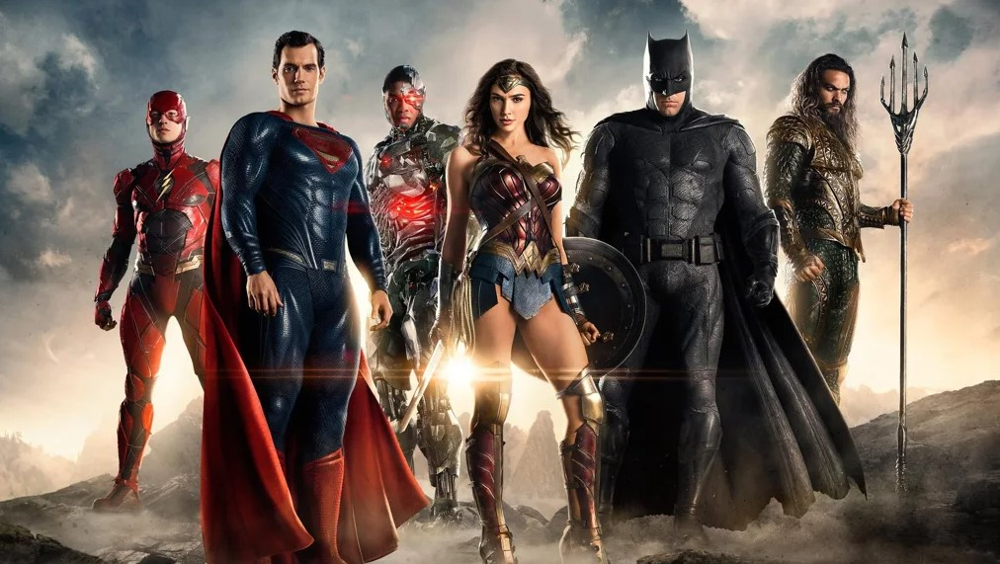
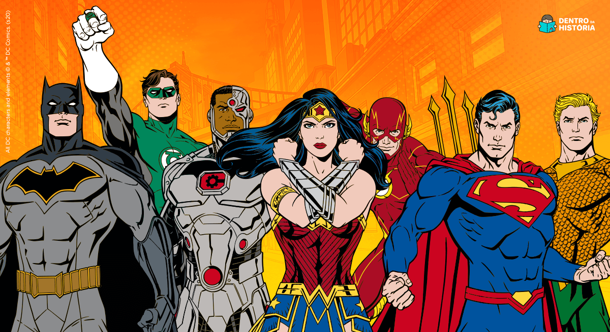

Desavenças no Universo Cinematográfico da DC Agitam Futuro da Liga da Justiça
São Paulo, 9 de Agosto de 2023 O futuro da tão esperada equipe de super-heróis, a Liga da Justiça, no Universo Cinematográfico da DC (DCEU), está em tumulto à medida que relatos sobre conflitos criativos e desafios de gestão emergem, lançando sombras de incerteza sobre a continuidade do grupo.Fontes próximas à produção revelaram que a tentativa de unificar as visões criativas e direcionamentos narrativos dos personagens-chave da Liga da Justiça tem sido uma tarefa complexa. Diferenças entre diretores, roteiristas e executivos do estúdio têm contribuído para atrasos na produção e reescritas frequentes, afetando o ritmo da construção desse universo cinematográfico coeso.
As preocupações foram agravadas por notícias de que alguns atores principais têm expressado insatisfação com as decisões criativas tomadas pela produção. Essas tensões aumentaram a incerteza sobre o elenco original da Liga da Justiça e levantaram questionamentos sobre a possibilidade de futuras alterações nas representações dos personagens.
A situação é agravada pelo fato de que outros universos cinematográficos de super-heróis têm recebido aclamação e sucesso, destacando ainda mais os desafios enfrentados pela DCEU em sua busca por um lugar ao sol no gênero de filmes de super-heróis.
Apesar dessas controvérsias, a Liga da Justiça continua sendo um símbolo icônico da cultura pop, inspirando gerações de fãs e encorajando discussões sobre moralidade, poder e responsabilidade. Mesmo em meio às dificuldades, a série de filmes da DCEU ainda gera grande expectativa e continua atraindo atenção por seu potencial inexplorado.
Enquanto os fãs aguardam por informações claras sobre o futuro da Liga da Justiça, a incerteza em torno do universo cinematográfico da DC ressalta os desafios enfrentados na criação de narrativas complexas e coesas que agradem tanto aos fãs devotos quanto ao público em geral. Apesar dos obstáculos, a persistência da DCEU em trazer esses icônicos personagens à tela grande é um testemunho da importância duradoura da Liga da Justiça no mundo do entretenimento.